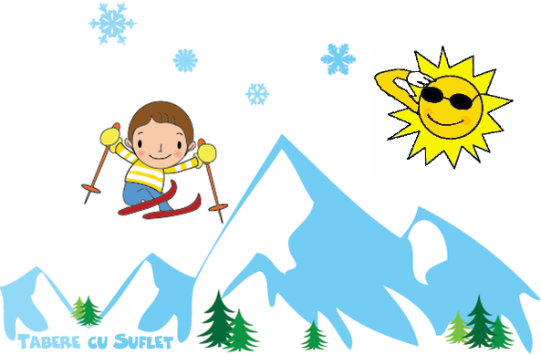
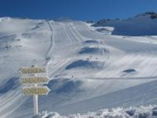

/ Tabere Schi si Snowboard / Schi si Snowboard in Alpi
/ Tabere Schi si Snowboard / Schi si Snowboard in Alpi

Zillertal - Hintertux
Domeniul schiabil Zillertal este unul dintre cele mai mari si mai impresionante din Alpi! Aici se gasesc nu mai putin 542 km de partii si 180 de instalatii de transport pe cablu, impartite in mai multe regiuni uriase. Practic, daca am cobori o data pe fiecare partie, nu ne-ar ajunge timpul intr-o saptamana sa le acoperim pe toate!
In primul rand vom schia in spatiul schiabil Zillertal Arena, care cuprinde statiunile Zell im Zillertal, Mayrhofen, Gerlos, Wald-Königsleiten, Kriml si Hochkrimml, toate interconectate intre ele, in care ne vom petrece mai multe zile pentru a-i descoperi toate frumusetile. Apoi vom putea schia in regiunea Hochzillertal – Hochfügen – Spieljoch, unde se afla mai multe trasee minunate de freeride. De asemenea, vom avea la dispozitie partiile din regiunea Penken - Rastkogel - Eggalm, inclusiv renumita Harakiri, partia cu cea mai mare inclinare din Austria, precum si alte domenii mai mici, precum Wildkogel-Arena.
Nu in ultimul rand, vom urca pe ghetarul Hintertux - cel mai mare din Austria cu cei 59 km de partii, unde, sub Vf.Oplerer (3476 m), se poate schia tot timpul anului.
Unde ne cazam
{kind=link}
Dolomiti Superski
Muntii Dolomiti sunt "cei mai frumosi din lume" obisnuia sa spuna marele alpinist Reinhold Messner, iar experienta de a schia aici, printre stanci impresionante si turnuri de poveste este, intr-adevar, una cu totul deosebita!
Dolomiti Superski, cu cele 12 statiuni ale sale si cu un total de partii ce depaseste 1200 km, este de departe cel mai mare spatiu schiabil din lume! Dintre acestea 97% au zapada artificiala, ceea ce garanteaza ca putem schia din decembrie pana in aprilie, fara problema! Aici se gasesc unele dintre cele mai frumoase partii negre, italienii fiind renumiti pentru modul in care pregatesc partiile, iar altitudinea maxima la care putem schia este 3269 m, in Vf. Marmolada
Vezi imagini din Dolomiti
{kind=link}
Skicircus - Saalbach Hinterglemm
Domeniul Skicircus Saalbach Hinterglemm Leogang Fieberbrunn este unul dintre cele mai frumoase domenii din Alpii austrieci, iar unirea cu domeniul Zell am See il va transforma in cel mai mare domeniu schiabil interconectat din Austria. Aici se gasesc 70 de instaltii pe cablu si se poate schia pe 270 km de partii, din care 140 km de partii albastre, 112 km partii rosii si 18 km de partii negre, printer care mai multe pârtii de Cupa Mondiala. De asemenea, aici sunt două pârtii iluminate, iar zapada este garantata de numeroasele instalati de producere a zapezii artificiale.
In taberele noastre din aceasta zona este inclus un skipass "Ski Alpin Card" care oferă acces suplimentar la alte doua domenii schiabile si la aproximativ 408 kilometri fabuloși de pârtie, sub motto-ul ”1 ski ticket, 3 regions, endless skiing fun”! Astfel, pe langa Skicircus Saalbach Hinterglemm Leogang Fieberbrunn, vom pute schia si in domeniul Schmittenhöhe din Zell am See sau sus, pe ghetarul Kitzsteinhorn de la Kaprun (3029 m).
Unde ne cazam
{kind=link}
Kaunertal - Pitztal
Domeniul de schi Kaunertal are 36 km de partii si 13 instalatii de transport pe cablu. Punctul maxim este la 3113 m, iar cel minim la 1287 m. Domeniul se afla in Parcul Natural Kaunergrat si are o istorie interesanta. Fiind situat intr-o arie protejata nu exista unitati de cazare iar infrastructura a fost lasata la un nivel minim, insa lipsa de dezvoltare a facut ca potentialul de freeride sa fie enorm. Practic poti sa schiezi o saptamana numai in afara partiei! Noua ne-au placut in mod special Fernergries sau Weissejoch, insa variantele sunt mult mai multe!
In afara de freeride, Ghetarul Kaunertal este renumit si pentru parkul de freestyle, precum si pentru partiile de antrenament de slalom, unde vin sa se antreneze marile echipe de schi ale lumii.
De asemenea, schipassul ne ofera posibilitatea sa schiem si la Pitztal, un alt ghetar magnific, din Tirol!
Mai multe imagini de la Kaunertal
{kind=link}
Flatach - Molltaler gletscher
Situat in rezervatia naturala Hoche Tauern, nu departe vf. Grossglockner (3798 m) - cel mai inalt din Austria, Molltaler gletscher este considerat, pe buna dreptate, unul dintre cei mai frumosi ghetari din Carinthia (Kärnten) si din intreaga Austriei.
Iubitorii schiului vor gasi aici 53 de km de partii albastre, rosii sau negre, un Snowpark cu Boredercross, BigAir si Wellenbahn. Cei avansati se vor putea bucura din plin de partiile lungi si spectaculoase.
Un funicular subteran face legatura cu statiunea Flatach, aflata la 8 km.
In zilele in care este prea frig pe ghetar, vom schia la Ankogel, Malnitz sau alte statiuni mai joase.
Unde ne cazam
 |
Annaberg - Dachstein West
Annaberg este o statiune situata in spatiul schiabil Dachstein West, in partea centrala a Austriei. Este conectata prin mijloace de transport pe cablu cu alte doua statiuni: Gosau si Russbach.
Iubitorii schiului se pot bucura aici de 142 km de partii, dintre care 12 km de partii negre (inclusiv partia de slalom "Marcel Hirscher"), 96 de partii rosii si 34 de partii albastre. Si pentru ca sa nu avem emotii cu zapada, tunurile de zapada acopera 86% din partii.
Unde ne cazam
{kind=link}